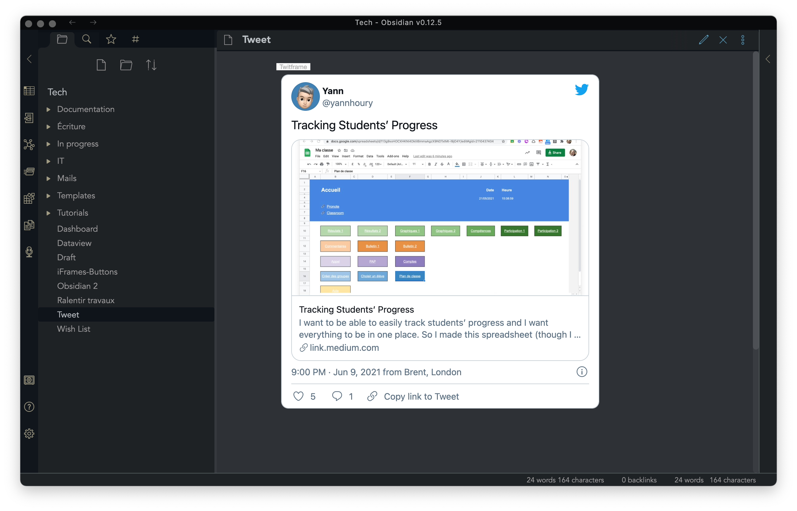
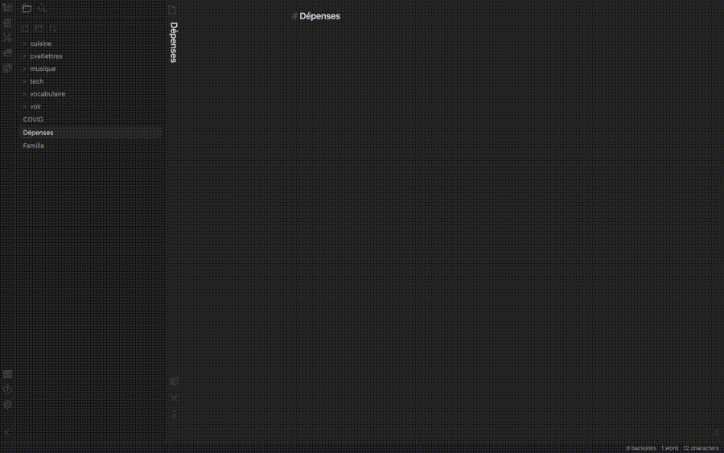
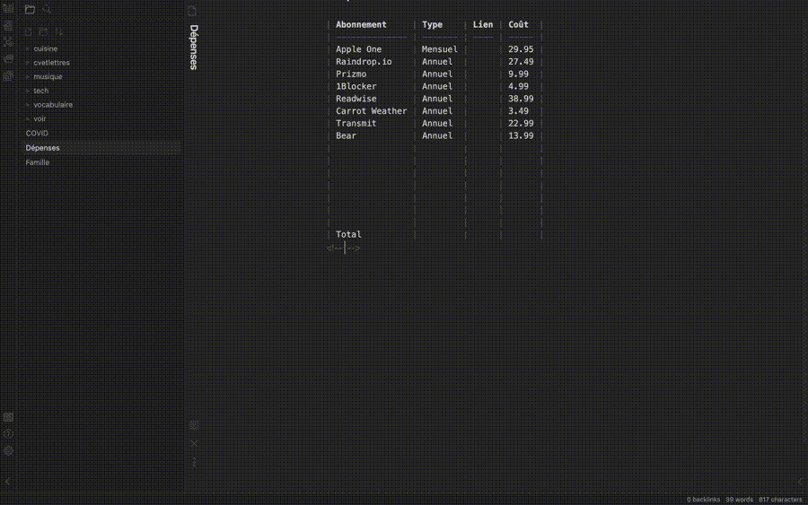
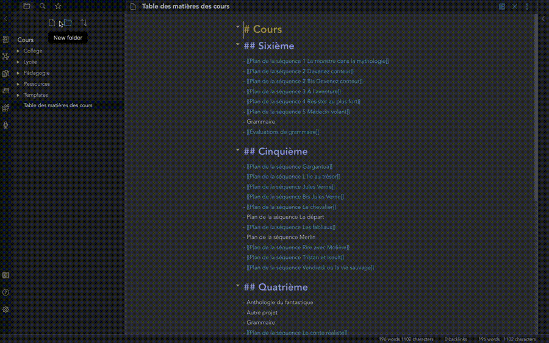
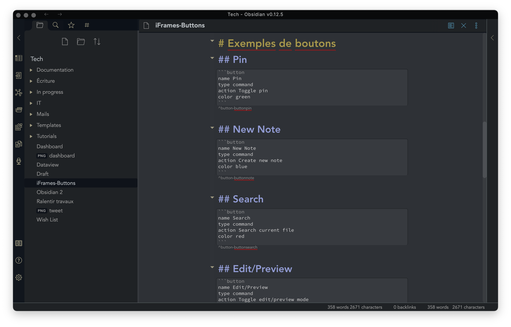
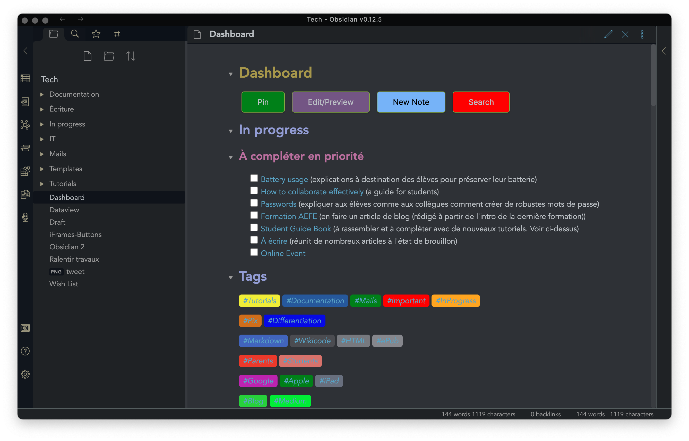
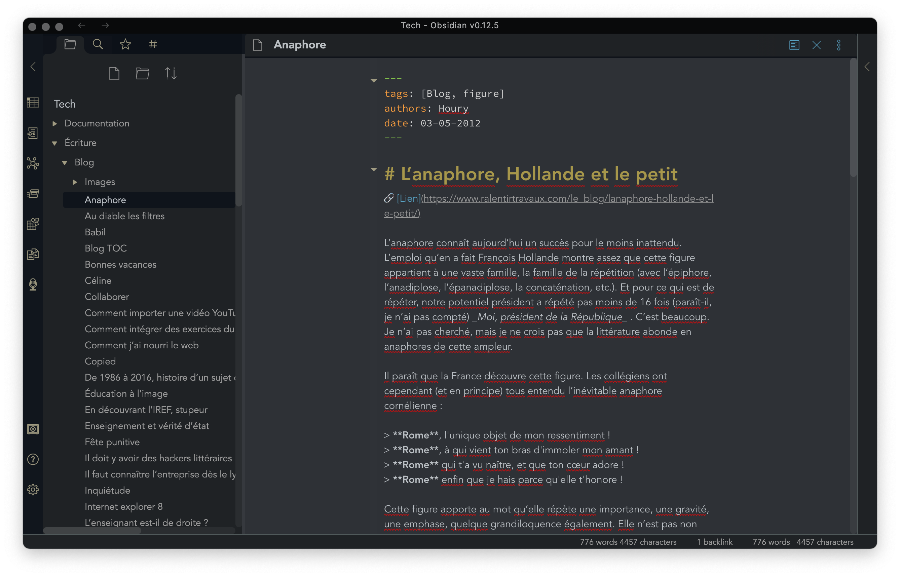
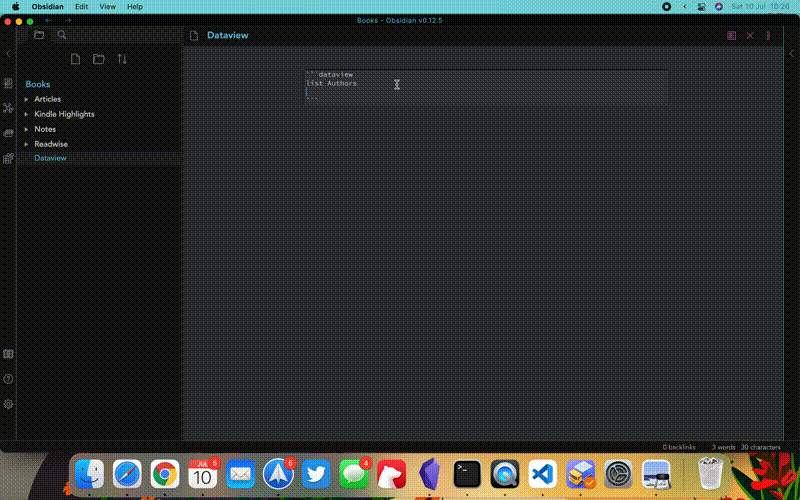

Obsidian 2
J'ai découvert Obsidian récemment et ai écrit dans la foulée cet article dans lequel j'en disais tout le bien possible, et franchement il y avait de quoi dire.
Mais dans ma conclusion, je savais qu'il me restait beaucoup de choses à découvrir et écrivais donc :
Comme je l'ai dit en début d'article, je suis probablement, forcément passé à côté de beaucoup, beaucoup de choses. [...] Mais cette impression permanente d'avoir à découvrir une vaste terra incognita est un vrai plaisir dans l'utilisation quotidienne d'Obsidian. On sait qu'on a toujours un truc à explorer.
Je ne m'étais pas trompé.
Je continue à explorer inlassablement Obsidian sans m'en lasser et même ce que je connaissais déjà parvient à un état de raffinement nouveau et progressif qui me laisse pantois. Par exemple, les raccourcis clavier (hotkeys) sont, pardon pour l'évidence, un incroyable moyen d'accélérer son travail. Le truc, c'est qu'il y a un raccourci pour la moindre chose.
Quelques exemples :
cmd + P(lancer une commande)cmd + ⇧ + P(épingler une page (pin))cmd + ⇧ + i(utiliser un template)
C'est vous même qui décidez (et si vous oubliez : cmd + P pour chercher...).
Les iframes ne cessent de m'enchanter non plus. J'en avais déjà parlé précédemment également, mais j'avais un souci avec l'affichage des tweets. Ceux-ci ne s'affichant pas correctement, j'ai désomaris recours à https://twitframe.com qui m'affiche un beau tweet en bonne et due forme.

Mais, évidemment, ce sont les plugins qui sont responsables en grande partie de la richesse d'Obsidian et qui justifient l'écriture de ce deuxième article. Voici ceux qui m'ont le plus impressionné.
- Advanced tables
- Templates
- Buttons
- Tags pane
- Dataview
Advanced tables⧫
Comme vous pouvez vous en douter, ce plugin permet de créer des tableaux, ce qui n'est quand même pas le fort du Markdown. Mais, comme vous vous en doutez également, ce plugin va considérablement arranger les choses.
Comment l'utiliser ?⧫
Je cite les explications trouvées sur le compte Github du développeur.
To create a table, create a single
|character, then type the table's first heading and press Tab. Continue entering headings and pressing Tab until all the headings are created. Press Enter to go to the first row. Continue filling cells as before, and press Enter again for each new row.
Ce qui, en français googlement traduit, donne :
Pour créer un tableau, créez un seul caractère « | », puis saisissez le premier titre du tableau et appuyez sur Tab. Continuez à saisir les en-têtes et appuyez sur Tab jusqu'à ce que tous les en-têtes soient créés. Appuyez sur Entrée pour accéder à la première ligne. Continuez à remplir les cellules comme avant et appuyez à nouveau sur Entrée pour chaque nouvelle ligne.

Sinon, lorsque le curseur est placé dans le tableau, vous pouvez utiliser les raccourcis clavier suivants :
| Hotkey | Action |
|---|---|
Tab |
Next Cell |
Shift + Tab |
Previous Cell |
Enter |
Next Row |
Cmd + Shift + D |
Open table controls sidebar |
Le plus simple est parfois encore d'utiliser la commande (cmd + P) et de taper « table » pour trouver ce dont on a besoin.
Mais ce n'est pas tout !
Les formules⧫
Le titre est un peu un spoiler, mais enfin, on peut avoir des formules dans son tableau comme on le ferait avec Google Sheets ou Excel. Quelques explications ici :
- Formulas in Markdown Tables
- Using Excel-like Formulas In Obsidian - Advanced Tables Plugin (vidéo bien plus pratique et rapide pour comprendre)
Sinon voici ce que j'ai compris pour faire une simple addition. À la fin du tableau,
- Insérez un commentaire HTML :
<!-- -->(sans oublier les espaces) - Ajoutez
TBLFM:(= table formatt) :<!-- TBLFM: --> - Précisez la destination & la source (en fait, là où la formule sera placée : dernier rang, dernière colonne)
@>$2 - Indiquez la formule :
=sum() - Donnez la première rangée :
@I(=première rangée sous le titre/header) - Puis la dernière :
@-1(= dernière rangée) - Utilisez le raccourci (
cmd + option + D) ou la commande (cmd + P) et choisirevaluate formulas
En pratique, ça donne ça :
| Chose | Nombre |
|---|---|
| Un | 1 |
| Deux | 2 |
| Trois | 3 |
| Total | 6 |

On avouera que n'est quand même pas super user friendly, mais c'est plutôt amusant (quoique j'utiliserai plutôt un tableur de préférence pour ce genre de choses).
## Templates Quand on veut s'éviter d'écrire et de réécrire inlassablement la même chose, on crée des templates.
J'ai, par exemple, créé un template pour rédiger le plan d'une séquence que je donne à mes élèves. Le template insère automatiquement les principaux titres et les tags.
Ainsi, je crée un nouveau fichier, utilise le raccourci suivant : cmd + ⇧ + i, choisis le template voulu et mon plan de séquence est automatiquement inséré. Je n'ai plus qu'à le remplir.

À l'avenir, jaimerais utliser les templates pour accélérer l'écriture de mails pour communiquer davantage avec les parents pour signaler rapidement tout manquement, difficulté ou autre. Bref, je sens que je vais créer de nombreux templates.
Si vous voulez en savoir plus, voyez cette vidéo de Bryan Jenks pour comprendre comment faire (la deuxième partie de la vidéo parle du plugin Templater mais ça m'a paru un rien complexe.)
Lisez aussi l'aide d'Obsidian. Mais, en gros, c'est relativement simple :
- Activez les templates dans Core plugins (dans les réglages)
- Créez un dossier Templates (pour stocker vos templates)
- Créez dans ce dossier un template (en fait, un simple fichier contenant tout ce que vous souhaitez ensuite réutiliser)
- Lancez votre template (par exemple, vous créez un fichier et y insérez votre template)
Buttons⧫
Aussi surprenant cela puisse-t-il paraitre, on peut insérer dans une note... un bouton. Bon, après tout, on savait déjà qu'on pouvait insérer un iframe ou un tableau contenant une formule comme dans un tableur. Alors pouquoi pas un bouton ? Pour ce faire, téléchargez le plugin Buttons.
Il y a un assistant pour créer un bouton, mais en fait ce sont quelques lignes de codes apparaissant dans votre note et qui contiennent quelque chose comme ceci :
```button
name Pin
type command
action Toggle pin
color green
```
^button-buttonpin
En gros, on a
- le nom du bouton (name)
- le type (ce que fait le bouton)
- l'action effectuée
- la couleur

OK, mais pour quoi faire ?
Eh bien j'imagine que les possibilités sont assez importantes (bis repetita...), mais comme vous allez le découvrir dans la prochaine section de cet article, j'en ai créé quelques-uns sur une note que j'ai baptisée Dashboard. En attendant, sachez que les options pour créer les boutons sont les suivantes :
- Command: Click the Button to run a Command from the Command Palette
- Link: Click the Button to open a URL or URI
- Calculate: Click the Button to run a math calculation. Calculate Buttons can reference lines from the note
- Template: Click the Button to prepend, append, insert, or create a new note from a template note
- Text: Clock the Button to prepend, append, insert, or create a new note with specified text
- Swap: A Swap Button is a special type of Inline Button. With a Swap Button you can run a different type of Button on each click
La meilleure vidéo pour comprendre ce plugin est celle de son auteur (mais regardez les deux autres, le développeur est marrant).
Une fois le plugin installé,
- Lancez la commande
cmd + P - Tapez « button » (puis sélectionnez « Button Maker »)
- Créez votre bouton (sélectionnez dans le menu le type de bouton que vous voulez créer)
- Modifiez deux ou trois paramètres (comme l'apparence ou si vous voulez que le bouton disparaisse une fois qu'il a été utilisé)
On peut aussi choisir d'insérer un « inline button » (le bouton sera inséré dans la ligne) et c'est très élégant. Pour ce faire, suivez les instructions suivantes :
Inline Buttons can be created inline with other text, or other Buttons. An Inline Button is essentially a copy of an existing Button codeblock placed inline. To create an inline button: 1. Create a regular Button using the Button Maker or hand-written Button codeblock 2. Ensure your Button has a unique button-block-id 3. Go to the note you want an inline Button and run the Insert Inline Button Command, or write the button-block-id between backticks:
button-id
Inline Buttons must start with button, whereas other usages of the button-block-id only require the id
### Dashboard
Mon dashboard est une page d'accueil qui affiche toutes les tables des matières de chaque dossier voire sous-dossier. En utilisant ![[texte]], on peut insérer le contenu d'une note dans une autre note. Ainsi, chaque table des matières peut être affichée dans la table principale et s'actualiser automatiquement. Makes sense?

Le dashboard présente quelques boutons (des « inline buttons ») : Pin, Edit/Preview, New Note, Search... Ça permet d'effectuer certaines actions plus vite. J'y ai placé également mes tags ou encore les tâches à accomplir avant 2071.
Tags⧫
Tout d'abord, activez le « Core plugin » Tag pane. Comme indiqué dans la description du plugin :
Adds a panel on the right that displays all the tags you have, along with their tag count.
Et comme je trouvais plus simple de l'avoir à gauche, je l'ai simplement fait glisser sur la gauche pour l'avoir à côté de la loupe ou de l'étoile où je fais mes recherches ou place les notes les plus fréquemment utilisées.
À propos de tags...
J'ai découvert l'étendue des possibilités induites par YAML. Pour faire très court, YAML = metadata.
Pour rappel, les métadonnées, ce sont des données sur vos données. Ça procure des informations sur vos données. Par exemple, pour une photo, les métadonnées vont vous donner la dimension, le type d'appareil, mais encore la date et l'heure, la localisation ou même, selon le programme que vous utilisez, des informations sur les gens ou les choses apparaissant sur la photo...
Les métadonnées que vous allez placer dans vos notes peuvent donc être l'auteur, la date, des tags, etc.
Pour en savoir davantage sur YAML et savoir comment l'utiliser, vous pouvez aussi lire et voir ceci pour comprendre exactement de quoi il retourne si cela ne vous parle pas :
Mieux encore, regardez An Introduction to Dataview - Part 1. C'est une vidéo excellente pour comprendre YAML, les metadata et surtout, on va le voir ci-dessous, le plugin Dataview.
Les données YAML doivent être placées au début du fichier avec --- au début et à la fin.
---
tags: [Documentation, Markdown]
---
Entre ces ---, vous placez une « key » (par exemple « tags ») et une « value » (par exemple « Markdwon »). Pour le moment, Obsidian n'accepte que trois keys : tags, aliases et cssclass, mais ça n'a pas beaucoup d'importance parce que vous allez inévitablement utiliser Dataview.
Les avantages sont immenses, mais le premier qui m'est apparu est que mes tags n'apparaissent pas à l'export. Ils n'encombrent pas non plus la page.

Mais surtout on peut aller beaucoup plus loin avec Dataview.
Dataview⧫
Pour tout savoir ce que je ne saurais vous expliquer en quelques lignes sur Dataview, voyez
Il parait, du moins si j'en crois ceux qui savent exactement de quoi il retourne, que ça ressemble à des requêtes SQL. En fait, on peut transformer ses notes en une base de données dans laquelle on va pouvoir puiser allègrement.
Je peux, par exemple, demander à avoir une liste de tous les fichiers se trouvant dans tel dossier (à condition d'appuyer sur Preview ensuite).
On écrit simplement ceci :
````
list
`````
Mais, évidemment, c'est l'exemple le plus simple que l'on puisse donner.
On peut faire tellement plus ! On peut même faire des tables et trier ses notes par date, auteur ou « rating », etc.
Le mieux est encore de voir cela en images.

Pour cela, on va utiliser des opérateurs comme from pour filtrer la liste et afficher par exemple un hashtag particulier. Ou lister le contenu d'un dossier (mettre des guillemets : "Le dossier").
On peut
- utiliser opérateur booléen
ANDouOR - utiliser le signe moins
-Googlepour exclure certains termes de la recherche - Utiliser le signe
+pour concaténer - etc.
Conclusion⧫
Il n'y en aura pas (prétérition). Je sais que je vais encore découvrir plein de choses.
Je ne peux que citer la conclusion à laquelle j'étais parvenu dans l'article précédent et que je citais au début :
Comme je l'ai dit en début d'article, je suis probablement, forcément passé à côté de beaucoup, beaucoup de choses. [...] Mais cette impression permanente d'avoir à découvrir une vaste terra incognita est un vrai plaisir dans l'utilisation quotidienne d'Obsidian. On sait qu'on a toujours un truc à explorer.
La suite dans un troisième article ?